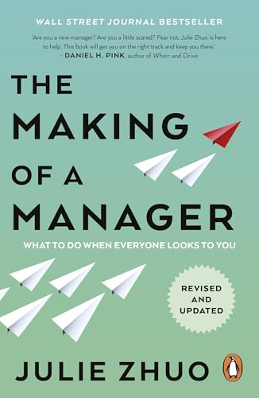
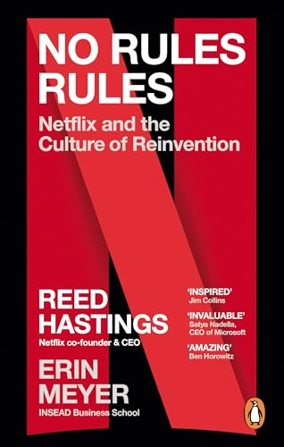
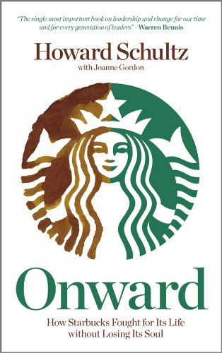
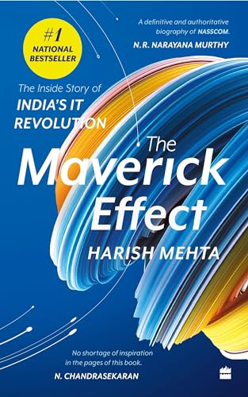
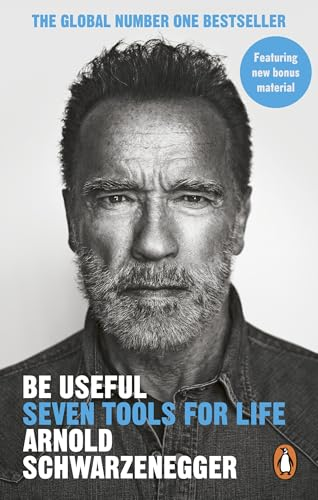
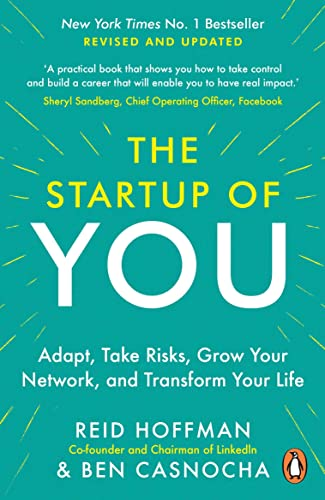
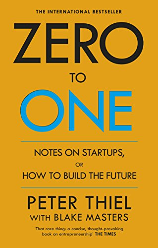
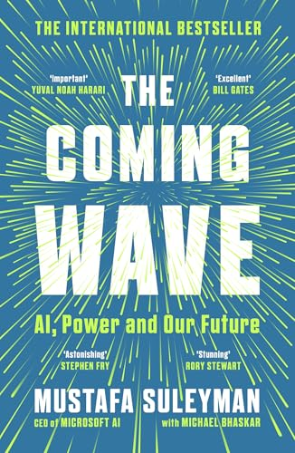
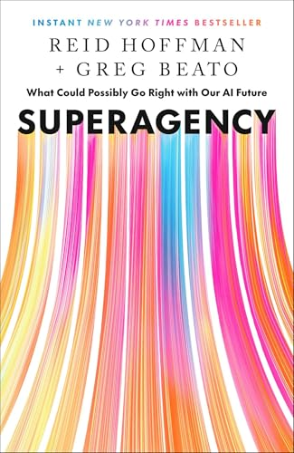

Reading list
Books
What I'm reading now and the books that shaped how I think about engineering leadership, technology, and the world. Not a syllabus — a snapshot.
Now reading
What's on the nightstand
What shaped me
The longer list
Books that meaningfully changed how I think — about leading teams, making decisions, building things that matter, and the parts of life that don't fit any of those.
Leadership & teams
-

The Making of a Manager
Julie Zhuo
The book I wish existed when I was promoted from senior engineer to first-time manager — Facebook's design VP on what to actually do in your first 90 days, and the years after.
-
The Hard Thing About Hard Things
Ben Horowitz
Honest in a way most business books refuse to be — what it feels like to lay people off, make calls with no good answer, and run a company that might not survive the quarter.
-

No Rules Rules
Reed Hastings & Erin Meyer
How Netflix runs without performance reviews, vacation policies, or expense rules — and why "talent density plus radical candor" is the bet underneath all of it.
-
Play Nice But Win
Michael Dell
The taking-Dell-private playbook, told by the founder — a masterclass in long-horizon strategic patience while activist investors and Wall Street are screaming at the door.
-

Onward
Howard Schultz with Joanne Gordon
Schultz's return to Starbucks and the year of unsentimental decisions it took to bring the company back from over-expansion — the most useful "turnaround" memoir I've read.
-
My Life in Full
Indra Nooyi
Former PepsiCo CEO on doing the work and what it actually costs — the most candid book I've read about the trade-offs of running a global company while raising a family.
-

The Maverick Effect
Harish Mehta
The inside story of how a small group of Indian software founders built NASSCOM and an entire IT industry from nothing — by people who lived it.
How to think, how to act
-
Thinking in Systems: A Primer
Donella H. Meadows
The shortest, clearest introduction to seeing the world as feedback loops rather than discrete events. Changes how you debug organizations as much as software.
-
The Righteous Mind
Jonathan Haidt
Why reasonable people violently disagree about politics and religion — Haidt's "moral foundations" framework is the most useful lens I've found for understanding why teams talk past each other.
-
The Psychology of Money
Morgan Housel
Twenty short essays on how people actually behave with money — less a finance book than a study of human nature wearing a finance disguise.
-
Never Split the Difference
Chris Voss with Tahl Raz
A former FBI hostage negotiator on the techniques that actually move stuck conversations. Reframed how I think about every meeting where a decision is being avoided.
-

Be Useful
Arnold Schwarzenegger
Seven blunt rules for getting things done from someone who has, repeatedly, started from nothing in unrelated fields. The most underrated life-advice book of recent years.
-

The Startup of You
Reid Hoffman & Ben Casnocha
Run your career the way a founder runs a company: permanent beta, iterative pivots, real investments in your network. Still the cleanest articulation of this idea.
The arc of building something
-
Shoe Dog
Phil Knight
Nike's founder on the messy, almost-bankrupt first two decades — the version of company-building that startup mythology usually edits out.
-

Zero to One
Peter Thiel with Blake Masters
Going from one to N is easier than going from zero to one — and only the latter creates real value. A short book that reorders how you evaluate "innovation".
-

The Coming Wave
Mustafa Suleyman with Michael Bhaskar
DeepMind co-founder on AI, synthetic biology, and the containment problem — a clear-eyed argument that this wave is fundamentally different from prior tech revolutions.
-

Superagency
Reid Hoffman & Greg Beato
The optimist's case for AI — not utopian, but specific about what individual humans gain when the tools get this capable. A useful counterweight to Suleyman.
-
Permissionless Innovation
Adam Thierer
The case for letting new technologies exist before deciding whether to regulate them — and why the precautionary principle costs more than it saves.
-
Never Grow Up
Jackie Chan with Zhu Mo
The most unguarded celebrity memoir I've read — Chan's eight decades of relentless work, breaking his body for the camera, and the kind of regret you only earn by living long enough.
On living, on losing
-
When Breath Becomes Air
Paul Kalanithi
A neurosurgeon writes about dying of cancer at 36 — somehow not a bleak book but the most clarifying one I've read about what makes a life meaningful while you have time.
-
Option B
Sheryl Sandberg & Adam Grant
Sandberg on losing her husband suddenly, Grant on the research about resilience. The honest manual on how to be present for someone in grief — and how to get through it yourself.